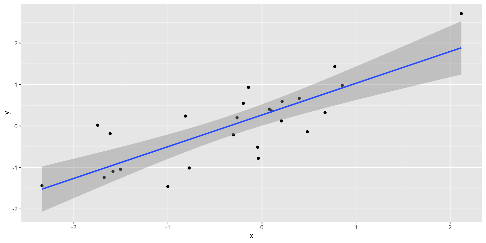

Association Not Causation
2024-12-16
Association is not causation
Association is not causation is perhaps the most important lesson one can learn in a statistics class.
Correlation is not causation is another way to say this.
Throughout the statistics part of the book, we have described tools useful for quantifying associations between variables.
However, we must be careful not to over-interpret these associations.
Association is not causation
There are many reasons that a variable \(X\) can be correlated with a variable \(Y\), without having any direct effect on \(Y\).
Today we describe three: spurious correlation, reverse causation, and confounders.
Spurious correlation
Spurious correlation
More here: http://tylervigen.com/spurious-correlations
Referred to as data dredging, data fishing, or data snooping.
It’s basically a form of what in the US they call cherry picking.
Spurious correlation
Spurious correlation
# A tibble: 1,000,000 × 2
group r
<int> <dbl>
1 710822 0.805
2 226015 0.792
3 841121 0.783
4 838373 0.776
5 131974 0.774
6 372183 0.770
7 572463 0.767
8 924637 0.766
9 804367 0.760
10 544498 0.759
# ℹ 999,990 more rows- We see a maximum correlation of 0.805.
Spurious correlation
Spurious correlation
Spurious correlation
- Sample correlation is a random variable:
Spurious correlation
- It’s simply a mathematical fact that if we observe random correlations that are expected to be 0, but have a standard error of 0.204, the largest one will be close to 1.
Spurious correlation
Spurious correlation
This particular form of data dredging is referred to as p-hacking.
P-hacking is a topic of much discussion because it poses a problem in scientific publications.
Since publishers tend to reward statistically significant results over negative results, there is an incentive to report significant results.
Spurious correlation
- In epidemiology and the social sciences, for example, researchers may look for associations between an adverse outcome and several exposures, and report only the one exposure that resulted in a small p-value.
Spurious correlation
- Furthermore, they might try fitting several different models to account for confounding and choose the one that yields the smallest p-value.
Spurious correlation
- In experimental disciplines, an experiment might be repeated more than once, yet only the results of the one experiment with a small p-value reported.
Spurious correlation
This does not necessarily happen due to unethical behavior, but rather as a result of statistical ignorance or wishful thinking.
In advanced statistics courses, you can learn methods to adjust for these multiple comparisons.
Outliers
Outliers
Outliers
This high correlation is driven by the one outlier.
Outliers
- If we remove this outlier, the correlation is greatly reduced to almost 0:
Outliers
There is an alternative to the sample correlation for estimating the population correlation that is robust to outliers.
It is called Spearman correlation.
Outliers
Outliers
- The outlier is no longer associated with a very large value, and the correlation decreases significantly:
- Spearman correlation can also be calculated like this:
Reversing cause and effect
Another way association is confused with causation is when the cause and effect are reversed.
An example of this is claiming that tutoring makes students perform worse because they test lower than peers that are not tutored.
In this case, the tutoring is not causing the low test scores, but the other way around.
Reversing cause and effect
Quote from NY Times:
When we examined whether regular help with homework had a positive impact on children’s academic performance, we were quite startled by what we found. Regardless of a family’s social class, racial or ethnic background, or a child’s grade level, consistent homework help almost never improved test scores or grades…
Reversing cause and effect
- A more likely possibility is that the children needing regular parental help, receive this help because they don’t perform well in school.
Reversing cause and effect
- If we fit the model:
\[ X_i = \beta_0 + \beta_1 y_i + \varepsilon_i, i=1, \dots, N \]
- where \(X_i\) is the father height and \(y_i\) is the son height, we do get a statistically significant result.
Reversing cause and effect
The model fits the data very well.
The model is technically correct.
The estimates and p-values were obtained correctly as well.
What is wrong here is the interpretation.
Confounders
Confounders are perhaps the most common reason that leads to associations begin misinterpreted.
If \(X\) and \(Y\) are correlated, we call \(Z\) a confounder if changes in \(Z\) cause changes in both \(X\) and \(Y\).
Confounders
Earlier, when studying baseball data, we saw how Home Runs were a confounder that resulted in a higher correlation than expected when studying the relationship between Bases on Balls and Runs.
In some cases, we can use linear models to account for confounders.
However, this is not always the case.
Confounders
Incorrect interpretation due to confounders is ubiquitous in the lay press and they are often hard to detect.
Here, we present a widely used example related to college admissions.
UC Berkeley admissions
two_by_two <- admissions |> group_by(gender) |>
summarize(total_admitted = round(sum(admitted / 100 * applicants)),
not_admitted = sum(applicants) - sum(total_admitted))
two_by_two |>
mutate(percent = total_admitted/(total_admitted + not_admitted)*100)# A tibble: 2 × 4
gender total_admitted not_admitted percent
<chr> <dbl> <dbl> <dbl>
1 men 1198 1493 44.5
2 women 557 1278 30.4UC Berkeley admissions
- Closer inspection shows a paradoxical result:
UC Berkeley admissions
What’s going on?
This actually can happen if an uncounted confounder is driving most of the variability.
UC Berkeley admissions
Confounding explained
Average after stratifying
Average after stratifying
- If we average the difference by major, we find that the percent is actually 3.5% higher for women.
Simpson’s paradox
The case we have just covered is an example of Simpson’s paradox.
It is called a paradox because we see the sign of the correlation flip when comparing the entire publication to specific strata.
Simpson’s paradox
- Simulated \(X\), \(Y\), and \(Z\):

Simpson’s paradox
You can see that \(X\) and \(Y\) are negatively correlated.
However, once we stratify by \(Z\) (shown in different colors below), another pattern emerges.
Simpson’s paradox
Simpson’s paradox
Simpson’s paradox
It is really \(Z\) that is negatively correlated with \(X\).
If we stratify by \(Z\), the \(X\) and \(Y\) are actually positively correlated, as seen in the plot above.